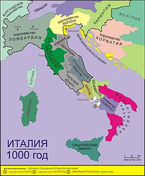
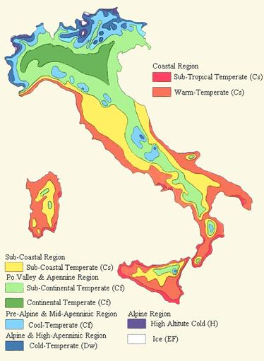
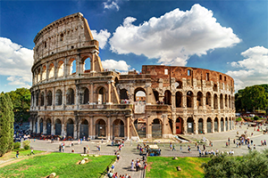
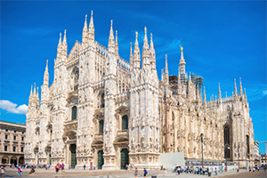
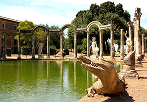
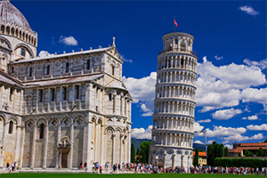
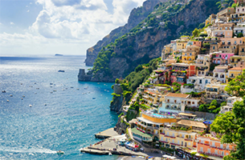

Территория Италии стала заселяться примерно 50 000 лет назад, то есть в конце нижнего палеолита.
Первоначально она была заселена неандертальцами, которые некоторое время сосуществовали с нашим
видом гоминид. Самыми важными культурами во время неолита были: Камуна, Террамаре, Виланова и
замковая культура. Также стоит упомянуть доисторические культуры Канеграте и Ремеделло.
Облик Апеннинского полуострова в доисторические времена очень сильно отличался от современного.
Чередование умеренного климата и оледенений привело к значительным переменам, климатическим и
географическим. В самые холодные периоды, например, острова Эльба и Сицилия были соединены с
итальянским полуостровом. Адриатическое море омывало итальянское побережье на широте Гаргано,
а остальная территория, сейчас погружённая под воду, представляла собой плодородную долину с
влажным климатом.

Государство на юге Европы, на Апеннинском полуострове. На севере граничит со Швейцарией и Австрией, на востоке - со Словенией, на северо-западе - с Францией. Омывается на западе Лигурийским и Тирренским морями, на востоке - Адриатическим, на юге - Ионическим и Средиземным морями. Италии также принадлежат Эльба, Сицилия, Сардиния и целый ряд более мелких островов.
В Альпийской (самой северной) зоне климат имеет континентальный характер, проявляется высотная поясность. У подножий Альп средняя температура июля составляет 20—22 °С. В Бардонеккии (западая часть) среднегодовая температура составляет 7,4 °C, а среднегодовое количество осадков — 660 мм. Восточная часть менее тёплая при большем увлажнении, в Кортина-д’Ампеццо эти показатели составляют 6,6 °C и 1055 мм. В долине Аосты (западная часть зоны) постоянный снежный покров начинается с 3110 м, а в Юлийских Альпах снега опускаются до 2545 м. Осенью и зимой горячий сухой фён, дующий из Швейцарии или Австрии, иногда вызывает резкие повышения температуры в некоторых долинах (Аоста, Суза). В восточной части Альп порывы сухого и холодного ветра бора могут достигать 200 км/ч. Летом дожди выпадают в высотных районах, а осенью и весной перемещаются к краям климатической зоны. Снег выпадает только зимой, количество (от 3 до 10 м) зависит от года и близости к побережью. На предгорья приходятся более обильные снегопады, чем на горные районы. В горных районах нередки морозы до −15—20 °С. Расположенные в регионе озёра смягчают локальный климат, средняя температура января в Милане равняется 1 °C, а в Сало, на озере Гарда — 4 °C. На территории итальянских Альп расположено несколько сот ледников, такие как Миаж (в массиве Монблан, крупнейший в Италии) и Кальдероне (на горе Корно-Гранде, самый южный в Европе).

Характерные особенности итальянской кухни объясняются местным климатом и теми продуктами, которые получили распространение в том или ином регионе. Каждая область Италии может похвастаться особенными рецептами. Это делает знакомство с итальянской едой вдвойне увлекательным.

Достопримечательности Италии невозможно представить без Колизея. Это огромный амфитеатр, возведенный еще в 72 году н.э. и ставший главным символом Римской империи. Это здание в свое время вмещало 55 тысяч человек, а слава о нем разносилась далеко за пределы страны. Своим созданием Колизей обязан императору Титу Флавию Веспасиану, решившему разрушить дворец Нерона, тем самым искоренив память о нем и прославив себя как мудрого правителя.

Кафедральный собор, построенный в честь Рождества Пресвятой девы Марии и являющийся символом города. Данное монументальное здание способно одновременно вместить до 40 000 человек, что позволяет причислить его к одному из крупнейших готических храмов мира.

Вилла Адриана, расположенной на 120 гектарах в небольшом городке Тиволи. Узнав биографию ее владельца – императора Адриана, становится понятно, что это место им было выбрано не случайно. В историю данный правитель вошел как мудрый философ, ценитель живописи и архитектуры. Он сам участвовал в разработке многих проектов того времени, и на склоне лет решил построить виллу, где можно предаваться размышлениям и созерцанию прекрасного.

В список самых известных достопримечательностей Италии непременно включают «падающую» Пизанскую башню, которая является колокольней собора Санта-Мария Ассунта. Помимо своего наклона, образовавшегося в результате неправильного расчета архитектора, она обладает еще целым рядом уникальных характеристик, привлекающих к ней миллионы туристов:

Здесь собрано все то, что позволяет назвать это место «райским уголком». Удивительное буйство красок, созданных природой, сочетается с рукотворными постройками. На улочках можно увидеть многочисленных художников, которые за небольшую плату нарисуют портрет или понравившийся пейзаж. Разнообразие архитектурных стилей обусловлено историческими событиями, происходившими на данной территории на протяжении многих веков.